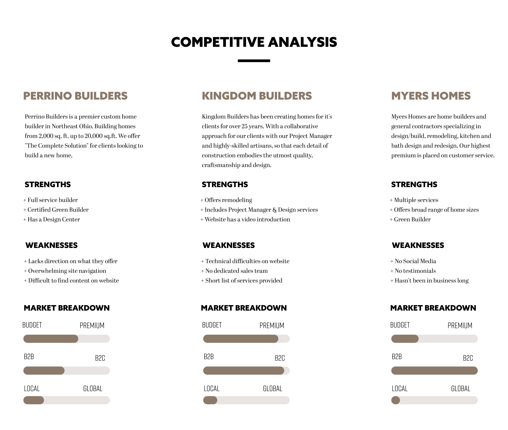
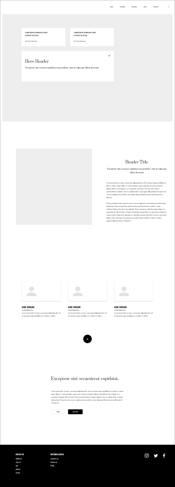
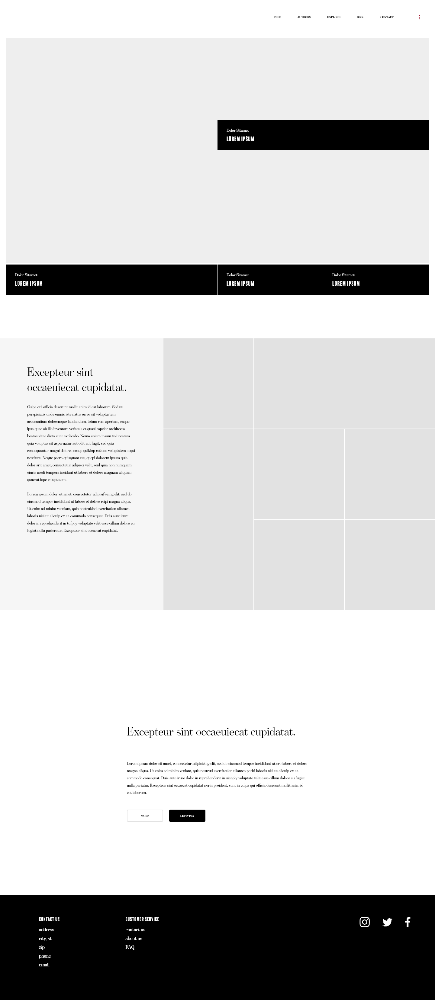
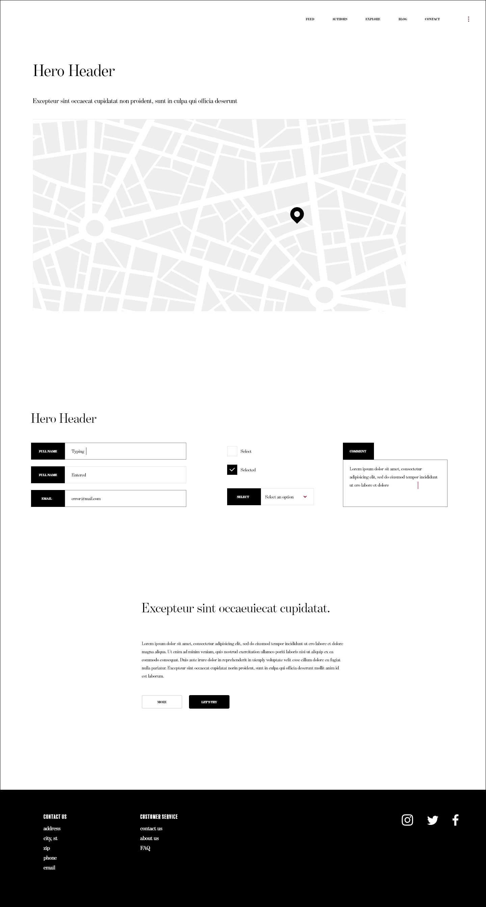
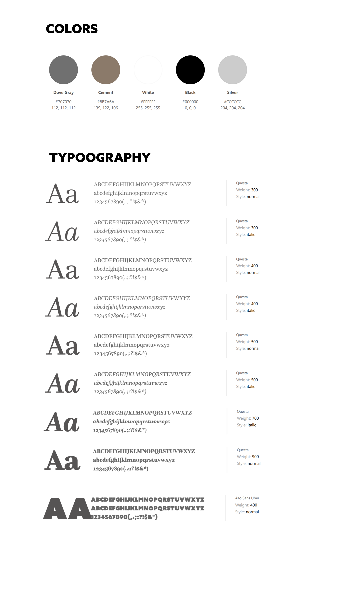

Kern Building wanted to refresh their website to be modern, illustrate the company's vision, and increase their online presence. They wanted their site to be simple and act as a showcase for the work they have done.
My Role
Research
Competitors
Design
Mock-ups & Style Guide
Visual
Low & High Fidelity
Research
The next step was to understand the custom home builder’s audience and competitors. I researched local competitors to understand where Kern Building can provide a competitive edge in the market. Another item I took into account was that social media can be one of the best ways to communicate with potential leads and strengthen relationships with customers online. This piece was very important since it would drive engagement.

Design
From there I designed the page layout and how the site navigation will be structured. I narrowed down concepts to eliminate other big picture options. Once I decided on the layout I started the wire frame process.



Style Updates
They requested to update the color palette and fonts so they are modern, yet classic.

Visual
Once the wire frames were approved I designed an interface that users will find informative and sophisticated. The final design allowed Kern Building to communicate their brand, quality, and values in one elegant website.